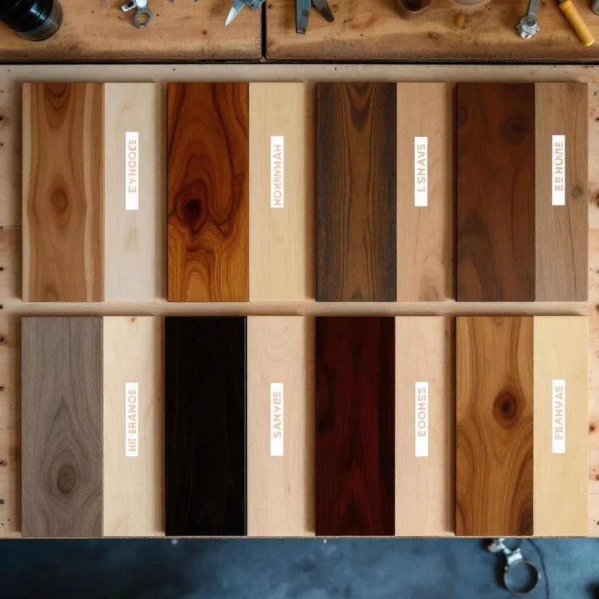

Best Hardwood Stain Colors for 2026: Trends & Timeless Choices
Choosing a stain color is one of the most impactful decisions in any refinishing project. Here's what's trending in 2026 — and what always works.

2026's Top Trending Stain Colors
1. Warm Walnut
The undisputed champion of 2026. Warm walnut strikes the perfect balance — rich enough to add drama, warm enough to feel inviting. It works beautifully with Elkhorn' mountain aesthetic, complementing stone fireplaces, timber accents, and Omaha metro views. This is our most-requested color across all neighborhoods from Bennington to Millard.
2. Weathered Gray
Gray tones continue their multi-year reign, but 2026 favors warmer grays over the cool, ash-toned grays of previous years. Think "weathered driftwood" rather than "concrete." Weathered gray pairs exceptionally well with white cabinetry and modern farmhouse interiors — a style that's exploded in Elkhorn' newer construction.
3. Natural / Water-Popped White Oak
The "no stain" look is huge in 2026. Water-popping opens the wood grain before applying clear coat, creating a Scandinavian-inspired light, airy aesthetic. This works best on white oak — which fortunately is one of the most common species in Elkhorn homes. It's especially popular in Gretna arts district homes where owners want a gallery-like feel.
4. Espresso
For dramatic contrast, espresso remains a power player. This near-black stain creates stunning visual impact against light walls and makes rooms feel more luxurious. Fair warning: dark stains show dust and scratches more readily, so they require slightly more maintenance — something worth considering in Nebraska's dusty, dry climate.
5. Honey Amber
A modern update on the classic golden oak that avoids the orangey tone of the 1990s. Honey amber adds warmth without looking dated. It's particularly beautiful on red oak, bringing out the grain pattern without fighting it.
Light vs. Dark: The Practical Comparison
Light Stains (Natural, Honey, Light Walnut)
- Make rooms feel larger and more open
- Hide dust, scratches, and pet hair better
- Better UV fade resistance (less visible change over time)
- Ideal for Nebraska's bright, sunny interiors
- Works well in smaller spaces and rooms with limited natural light
Dark Stains (Espresso, Dark Walnut, Ebony)
- Create dramatic visual impact and luxury feel
- Show dust, scratches, and water spots more easily
- Fade more visibly under Nebraska's intense UV
- Best in larger rooms with lots of natural light
- Require more frequent cleaning and better UV protection
Timeless Colors That Never Go Out of Style
If you're refinishing for longevity (or resale value), these colors have stood the test of time:
- Medium brown / Provincial: The "Goldilocks" of stain colors — not too light, not too dark. Universally appealing.
- Classic walnut: Rich, warm, and elegant. Works in every architectural style from Victorian to modern.
- Natural clear coat: Showcases the wood's natural beauty. Timeless by definition.
Elkhorn-Specific Recommendations
Based on our 10+ years refinishing floors across the Omaha metro area, here's what works best locally:
- For mountain views and large windows: Medium tones (warm walnut, provincial) that don't fight with the outdoor scenery
- For older homes: Classic walnut or natural finish that honors the home's character. Especially relevant in Old Nebraska City bungalows
- For resale: Medium brown tones are the safest bet — they appeal to the broadest buyer pool
- For UV-heavy rooms: Lighter stains that fade less noticeably, or invest in UV-blocking window treatments
Our Stain Selection Process
At Elkhorn Hardwood, we never let you choose a stain from a tiny swatch in a hardware store. Here's how we do it:
- In-home consultation: We bring 40+ stain samples to your home
- Test patches: We apply 3–4 top choices on a hidden area of your actual floor
- 24-hour review: Stain looks different when dry. We let test patches cure overnight so you see the true color in both natural and artificial light
- Final selection: You choose with confidence, knowing exactly what your finished floors will look like
This process is included in every refinishing project at no extra charge. See our cost guide for full pricing details.
Ready to Choose Your Perfect Stain Color?
Schedule a free in-home stain consultation. We bring the samples — you pick your favorite.